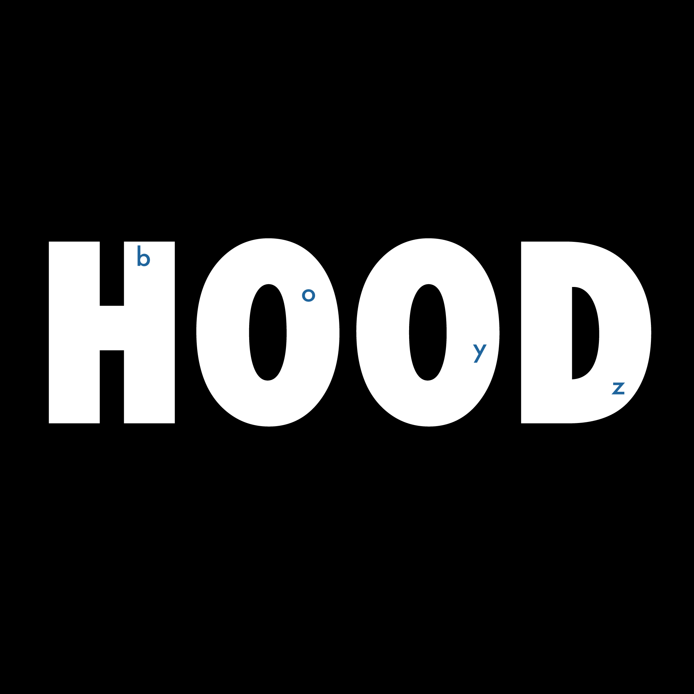

ARTS 412
Graphic Design Software II

Nathaly Uruchima
Nathaly Uruchima is a double major at SUNY Binghamton University. Nathaly is pursuing her BS in Computer Science and BA in Graphic Design. She is a dog parent to a toy poodle and mini goldendoodle. In her spare time she enjoys playing video games and reading novels.

Project 1: Riddle Me This - Web book
The final version of this project resulted in each students chosen riddle being collated into a book. Each student contributed a minimum of one movie based typographic riddle and a small group of students created the front and back cover, credits page, cover page, and author page. The class started this project in the beginning of the semester by comming up with differnet themes for the typographic riddle before choosing the theme of movies. Afterwards each group started brainstorming and sketching different movie riddles. Once each group had several digital concepts we met together as a class to choose which riddles should move to the refinment stage. During this stage the class decided on the color scheme and the font Futura. After adjusting our chosen riddles to match the font and color scheme we created concepts for the front and back cover, credit page, cover page, and author page. Finally after much revision and deliberation the final version of the book was created. Riddle Me This Link
Project 1: Typographic Riddle: The Truman Show
My inital sketch for The Truman Show was quite simple with only a black frame incasing the word Truman. While creating this riddle on illustrator I looked up the colors that the original offline screen contained as I wanted to make it more obvious that 'Truman' was inside of a TV. To make 'Truman' stand out more I placed a white rectangular bar in the background of the word. After selecting a color scheme and font, I adjusted the colors to match, changed the font for 'Truman', and centered the riddle more.
Project 1: Typographic Riddle: Boyz N the Hood

My initial sketch for Boyz N the Hood was lacking any color, but my inital version was a black background with 'Hood' in bold white letters and 'boyz' in a light blue that I moved inside of the letters of hood rather than be in the gaps. I purposely placed 'boyz' inside of the 'Hood' to hint at the movie title and the smaller size of boyz made it so the viewer would have to pay attention to the riddle rather than get the correct answer after a quick glance. My edits for the final version consisted of changing the font, centering the riddle better, and adjusting the blue for 'Boyz'.
Project 1: Typographic Riddle - Process
For this project, the class agreed to do typographic riddles based off of movies. My inital sketches were for various different movie genres. I atempted several ideas that didn't make it past the sketch phase, such as my ideas for Titanic, 12 years a slave, Fast and the Furious 5, and so on. After narrowing my movie selection down to: A Quiet Place, Boyz N the Hood, Countdown, Casablanca, and The Truman Show, I created my sketches on Adobe Illustrator that had more detail.